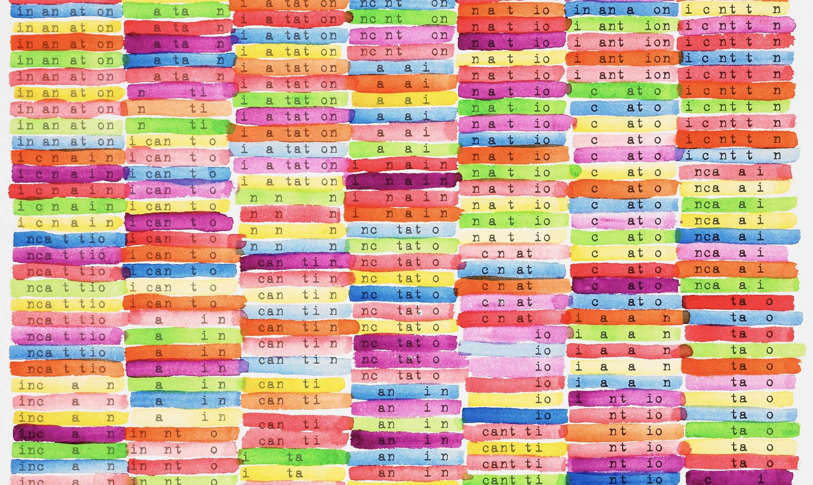

NLP avec r et en français - un Manuel synthétique
2021-07-19
Chapitre 1 Préface
1
L’eco système r s’est enrichi ces dernière années à grande vitesse dans le domaine du traitement du langage naturel, l’objet de ce manuel a pour but d’en donner une synthèse. Sa vocation est pratique même si on y laissera germer quelques considérations plus méthodologiques, voire épistémologiques. On ouvrira cependant chaque fois que c’est possibles aux questions théoriques et éthiques de ces méthodes. Leur réalisation computationnelle est le fruit souvent d’une longue histoire, au cours de laquelle les linguistes ont semé des idées essentielles qu’ont systématisé les informaticiens.
On soignera la bibliographie de manière synthétique pour en faire un état de l’art essentielet actualisée.
La rédaction de l’ouvrage est mené avec une règle de reproductibilité et de transparence, c’est le pourquoi le choix de ce support et des jeux de données associés.
Il sera dynamique, modifié à mesure de nos cours, séminaires, ateliers et observations des lecteurs.
1.1 Cours et séminaires
La liste des cours et séminaires où il sera présenté et utilisé.
- Colloque Marketing digital 1-2 septembre 2021
- AFM decembre 2021
- Ed Sorbonne - février 2022
- Dauphine master 204 - octobre 2021
- Master Siren - Dauphine - mai 2022
- Toulouse
- Lille master Data Science
1.2 La structure du livre
L analyse NLP peut être analysée comme un processus qui va de la production jusqu’ à la diffusion des analyses. Elle est aussi traversée par des évolutions profondes de méthodes qui ont complexifié au sens formel les modèles initiaux. L’apprentissage submerge le comptage,et les catégorisations….
Rappelons nous que les modèles de langages désormais distribués par les grands acteurs, comprennent des dizaines, voir des centaines de milliards de paramètres.
Le plan suit une logique qui va du simple au très compliqué, et de l’acquisition des données, de leur traitement et leur modélisation, jusqu’à la propagation….
- acquisition des données : directe, api et scrapping
- corpus dtm et cooccurence
- AFC et typologie
- l’annotation syntaxique et lexicale
- analyse du sentiment et sa généralisation
- word embedness
- factorial models
- Topic analysis
- ML
- deep learning
- translation : parsceque qu’il faut traiter des corpus multi lingual et que la communication peut aussi etre multilinguales.
- génératives : parce que la prochaine étape c’est quand on appliquera ces méthode sur la productions textuelles des bots.
1.3 Les jeux de données
Au cours du développement, plusieurs cas pratiques - souvent réduit en volume pour rester exemplaires, seront employés. Les donées seront partagées.
En voici la présentation systématique.
- Trump Twitter Archive : L’intégralité des tweets de Trump jusqu’à son banissement le 8 Janvier 2021.
- Confinement Jour J
- Citations : un recueil de citations littéraires pour de petits exemples et ponctuer le texte aride d’un peu de littérature et de poésie.
- Trip advisor Polynésie, un extrait d’un corpus établi par Pierre Ghewy et Sebastien de l’UPF
- Airbnb
- Covid
disponibles dans le repositery avec le code du book. Les amendements et améliorations sont souhaitées et attendues.
1.4 Les ressources
Ce livre est écrit en Markdown (Allaire et al. 2021) et avec le package Bookdown (Xie 2021)
Le code s’appuie très largement sur tidyverse et emploie largement les ressources de ggplot et dplyr . On recommande au lecteur de consulter donc les ouvrages suivants quand il s’interroge sur la construction des graphiques. On part du parti-pris que les lecteurs ont une connaissance satisfaisantes de ces outils génériques. Une mention particulère doit être faite sur la question du traitement du texte, stringr est aussi un des outils fondamentaux,
- rmardown
- ggplot
- dplyr
- stringer
###les packages
Les packages seront introduits au fur et à mesure. En voici la liste complète.
knitr::opts_chunk$set(echo = TRUE, message=FALSE,warning=FALSE)
#boite à outils et viz
library(tidyverse) # inclut ggplot pour la viz, readr et
library(cowplot) #pour créer des graphiques composés
library(ggridges) # le joy division touch
library(citr)
#networks
library(igraph)
library(ggraph)
# Accéder aux données
library(rtweet) # une interface efficace pour interroger l'api de Twitter
# NLP
library(tokenizers)
library(quanteda)
library(quanteda.textstats)
library(udpipe) #annotation syntaxique
library(tidytext)
library(cleanNLP) #annotation syntaxique
#sentiment
library(syuzhet) #analyse du sentimeent
#mise en page des tableaux
library(flextable)
#statistiques et modèles
library(lme4)
library(jtools)
library(interactions)
#ML
library(caret)
#graphismes
theme_set(theme_bw())
#palettes
library(colorspace) #pour les couleurs
# chapitre II
library(revtools)
library(rvest)1.5 Disponibilité
L’ensemble du code est disponible sur github. A ce stade c’est encore très embryonnaire. Les proches pourrons cependant y voir l’évolution du projet et de la progression
1.6 conventions
Quelques conventions d’écriture du code r
- On appele les dataframes de manière générale
df, les tableaux intermédiaires sont appelé systématiquementfoo - Gestion des palettes de couleurs ** une couleur :" royalblue" ** deux couleurs ** 3 à 7 couleurs
- On emploie autant que possible le dialecte tidy.
- Les chunks sont notés X, le chapitre, 01 à n, les jeux. 502 est le second chunk du chapitre 4.
- On commente au maximum les lignes de code pour épargner le corps du texte et le rendre lisible
1.7 A faire
todo list :
- insérer un compteur google analytics ( voir https://stackoverflow.com/questions/41376989/how-to-include-google-analytics-in-an-rmarkdown-generated-github-page)
- modifier le titre en haut à gauche
- vérifier le système de références voir ( https://doc.isara.fr/tuto-zothero-5-bibtex-rmarkdown-zotero/)
- Vérifier la publication en pdf
- restructurer le plan
References
Allaire, J. J., Yihui Xie, Jonathan McPherson, Javier Luraschi, Kevin Ushey, Aron Atkins, Hadley Wickham, Joe Cheng, Winston Chang, and Richard Iannone. 2021. Rmarkdown: Dynamic Documents for R. https://CRAN.R-project.org/package=rmarkdown.
Xie, Yihui. 2021. Bookdown: Authoring Books and Technical Documents with R Markdown.
Incantation for 6 voices Scott helmes, 2001. Museum of Minessota↩